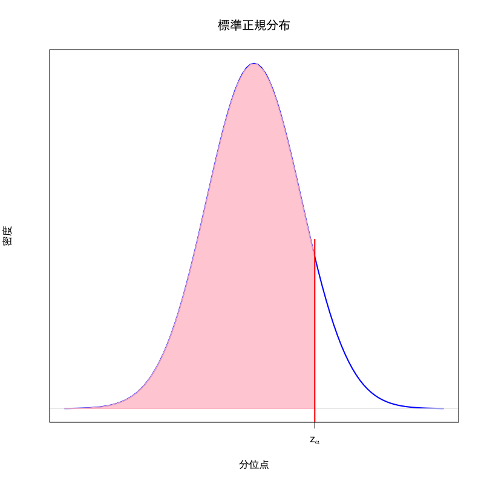
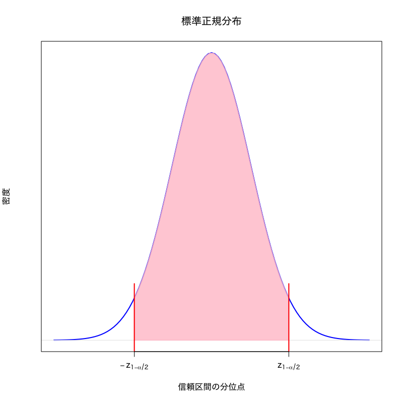
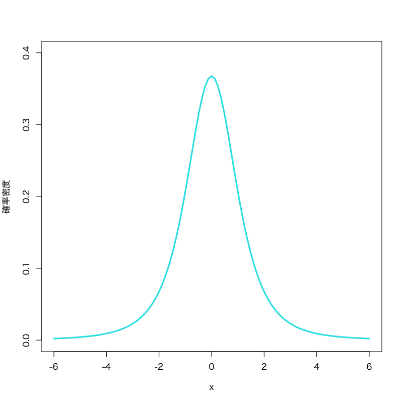

推定
第10講 - 確率分布を特徴づけるパラメタを推測する
(Press ? for help, n and p for next and previous slide)
講義概要
- 点推定
- 不偏推定量
- Cramér-Raoの不等式
- 最尤推定量
- 区間推定
- 信頼区間
- 正規母集団の区間推定
- 漸近正規性にもとづく区間推定
推定とは
統計解析の目的
- 観測データを確率変数の実現値と考えてモデル化
- 観測データの背後の確率分布を 推定
- 分布のもつ特性量(平均や分散など)を評価する
- 分布そのもの(確率関数や確率密度)を決定する
- 統計学で広く利用されている推定方法を説明
- 点推定
- 区間推定
推定の標準的な枠組
- 観測データは独立同分布な確率変数列 \(X_1,X_2,\dots,X_n\)
- \(X_i\) の従う共通の法則 \(\mathcal{L}\) を想定
- \(\mathcal{L}\) として全ての分布を考察対象とすることは困難
- 対象とする範囲が広くなりすぎる
- データ数 \(n\) が大きくないと意味のある結論を導き出せない
- 確率分布 \(\mathcal{L}\) を特徴づけるパラメタ \(\theta\) を考察対象
- \(\mathcal{L}\) の平均・分散・歪度・尖度など
- \(\mathcal{L}\) の確率関数・確率密度関数のパラメタ
- \(\mathcal{L}\) として全ての分布を考察対象とすることは困難
点推定
点推定
定義
\(\mathcal{L}\) に含まれるパラメタ \(\theta\) を \(X_1,\dotsc,X_n\) の関数
\begin{equation} \hat{\theta}=\hat{\theta}(X_1,\dots,X_n) \end{equation}で推定することで， \(\hat{\theta}\) を \(\theta\) の 推定量 と呼ぶ．
- 記述統計量は分布のパラメタの1つ
推定量の例
\(\mathcal{L}\) の平均 \(\mu\) を 標本平均 \(\bar{X}=\frac{1}{n}\sum_{i=1}^nX_i\) によって 推定することが点推定であり, \(\bar{X}\) は \(\mu\) の推定量となる．
良い推定量
- 一般に1つのパラメタの推定量は無数に存在
- 推定量の良さの代表的な基準 : 不偏性・一致性
\(\hat{\theta}\) が \(\theta\) の不偏推定量
\begin{equation} \mathbb{E}[\hat{\theta}]=\theta \end{equation}\(\hat{\theta}\) が \(\theta\) の(強)一致推定量
\begin{equation} \text{\(\hat{\theta}\) が \(\theta\) に収束する確率が1}\quad (n\to\infty) \end{equation}良い推定量の例
標本平均, 不偏分散はそれぞれ \(\mathcal{L}\) の平均, 分散の不偏かつ一致性をもつ推定量
良い不偏推定量
一般に不偏推定量も複数存在
例: \(\mathcal{L}\) の平均 \(\mu\) の不偏推定量
- 標本平均 \(\bar{X}\)
- \(X_1,\dots,X_n\) のメディアン ( \(\mathcal{L}\) が \(x=\mu\) に関して対称な場合)
- \(X_1\) (最初の観測データだけ信じる極端な例)
- 不偏推定量の良さを評価する基準が必要
一様最小分散不偏推定量
\(\theta\) の任意の不偏推定量 \(\hat{\theta}'\) に対して推定値のばらつき(分散)が最も小さいもの
\begin{equation} \mathrm{Var}(\hat{\theta})\le\mathrm{Var}(\hat{\theta}') \end{equation}
Cramér-Rao の不等式
定理
\(\mathcal{L}\) は1次元パラメタ \(\theta\) を含む連続分布とし， その確率密度関数 \(f_\theta(x)\) は \(\theta\) に関して 偏微分可能であるとする． このとき，緩やかな仮定の下で， \(\theta\) の任意の不偏推定量 \(\hat{\theta}\) に対して 以下の不等式が成り立つ．
\begin{equation}%\label{cr-bound} \mathrm{Var}(\hat{\theta})\ge \frac{1}{nI(\theta)}, \end{equation}ただし
\begin{equation} I(\theta)=\int_{-\infty}^\infty \left(\frac{\partial}{\partial\theta}\log f_\theta(x)\right)^2 f_\theta(x)dx. \end{equation}
一様最小分散不偏推定量
- 用語の定義
- 下界 \(1/nI(\theta)\) : Cramér-Rao 下界
- \(I(\theta)\) : Fisher 情報量
定理 (Cramér-Rao の不等式の系)
\(\theta\) の不偏推定量 \(\hat{\theta}\) で 分散が Cramér-Rao 下界 \(1/nI(\theta)\) に一致するものが存在すれば， それは一様最小分散不偏推定量となる．
例 : 正規分布モデルの標本平均
- \(\mathcal{L}\) は平均 \(\mu\) , 分散 \(\sigma^2\) の正規分布
平均パラメタ \(\mu\) に関するFisher情報量 :
\begin{align} I(\mu)=\frac{1}{\sqrt{2\pi\sigma^2}} \int_{-\infty}^\infty\frac{(x-\mu)^2}{\sigma^4} e^{-\frac{(x-\mu)^2}{2\sigma^2}}dx =\frac{1}{\sigma^2} \end{align}- Cramér-Rao下界 : \(\sigma^2/n\)
- 標本平均 \(\bar{X}\) の分散 : \(\sigma^2/n\) (=Cramér-Rao下界)
- \(\bar{X}\) は \(\mu\) の一様最小分散不偏推定量
実習
練習問題
- \(X\) を一様乱数に従う確率変数とし，
平均値の推定量として以下を考える．
それぞれの推定量の分散を比較しなさい．
- 標本平均 (mean)
- 中央値 (median)
- 最大値と最小値の平均 ((max+min)/2)
ヒント : 以下のような関数を作り，Monte-Carlo実験を行えばよい
estimate_means <- function(n, min, max){ # 観測データ数 x <- runif(n, min=min, max=max) # 一様乱数を生成，範囲は引数から return(c(xbar=mean(x),med=median(x),mid=(max(x)+min(x))/2)) } # 3つまとめて計算する関数
最尤法
離散分布の場合
- 観測値 \(X_1=x_1,X_2=x_2,\dots,X_n=x_n\) の同時確率
- 確率(質量)関数 : \(f_{\boldsymbol{\theta}}(x)\)
- 確率関数のパラメタ : \(\boldsymbol{\theta}=(\theta_1,\dots,\theta_p)\)
独立な確率変数の同時確率 :
\begin{align} & P(X_1=x_1,X_2=x_2,\dots,X_n=x_n) =\prod_{i=1}^nP(X_i=x_i)\\ &= \prod_{i=1}^nf_{\boldsymbol{\theta}}(x_i) =f_{\boldsymbol{\theta}}(x_1)\cdot f_{\boldsymbol{\theta}}(x_2)\cdots f_{\boldsymbol{\theta}}(x_n) \end{align}
尤度関数
定義
パラメタ \(\boldsymbol{\theta}\) に対して 観測データ \(X_1,X_2,\dots,X_n\) が得られる理論上の確率
\begin{equation} L(\boldsymbol{\theta}) =\prod_{i=1}^nf_{\boldsymbol{\theta}}(X_i) \end{equation}を \(\boldsymbol{\theta}\) の 尤度 と言い， \(\boldsymbol{\theta}\) の関数 \(L\) を 尤度関数 と呼ぶ．
- 観測データ \(X_1,X_2,\dots,X_n\) が現れるのにパラメタ \(\boldsymbol{\theta}\) の値がどの程度尤もらしいかを測る尺度
最尤法
最尤法
観測データに対して「最も尤もらしい」パラメタ値 を \(\boldsymbol{\theta}\) の推定量として採用する方法 を最尤法という．
最尤推定量
\(\Theta\) を尤度関数の定義域として， 尤度関数を最大とする \(\hat{\boldsymbol{\theta}}\)
\begin{equation} L(\hat{\boldsymbol{\theta}}) =\max_{\boldsymbol{\theta}\in\Theta}L(\boldsymbol{\theta}). \end{equation}を \(\boldsymbol{\theta}\) の 最尤推定量 という．以下のように書くこともある．
\begin{equation} \hat{\boldsymbol{\theta}} =\arg\max_{\boldsymbol{\theta}\in\Theta}L(\boldsymbol{\theta}). \end{equation}
最尤推定量の計算
対数尤度関数
\begin{equation} \ell(\boldsymbol{\theta}) =\log L(\boldsymbol{\theta}) =\sum_{i=1}^n\log f_{\boldsymbol{\theta}}(X_i). \end{equation}- 対数関数は狭義単調増加
- \(\ell(\boldsymbol{\theta})\) の最大化と \(L(\boldsymbol{\theta})\) の最大化は同義
- 扱い易い和の形なのでこちらを用いることが多い
- 大数の法則を用いて対数尤度関数の収束が議論できる
最尤推定量の性質
広い範囲の確率分布に対して最尤推定量は 一致性 を持つ
連続分布の場合
- 確率密度関数 \(f_{\boldsymbol{\theta}}(x)\) を用いて尤度を定義
尤度関数
\begin{equation} L(\boldsymbol{\theta}) =\prod_{i=1}^nf_{\boldsymbol{\theta}}(x_i) =f_{\boldsymbol{\theta}}(x_1)\cdot f_{\boldsymbol{\theta}}(x_2)\cdots f_{\boldsymbol{\theta}}(x_n) \end{equation}対数尤度関数
\begin{equation} \ell(\boldsymbol{\theta}) =\log L(\boldsymbol{\theta}) =\sum_{i=1}^n\log f_{\boldsymbol{\theta}}(X_i) \end{equation}
例 : Poisson 分布の最尤推定
- \(\mathcal{L}\) をパラメタ \(\lambda>0\) のPoisson分布でモデル化
確率質量関数
\begin{equation} f(x)=\frac{\lambda^x}{x!}e^{-\lambda},\quad x=0,1,\dotsc \end{equation}対数尤度関数 (未知パラメタ : \(\lambda\) )
\begin{equation} \ell(\lambda)=\sum_{i=1}^n\log\frac{\lambda^{X_i}}{X_i!}e^{-\lambda} =\sum_{i=1}^n(X_i\log\lambda-\log X_i!)-n\lambda \end{equation}- 少なくとも1つの \(i\) について \(X_i>0\) を仮定する
- (Poisson分布のつづき)
\(\ell(\lambda)\) の微分
\begin{equation} \ell'(\lambda)=\frac{1}{\lambda}\sum_{i=1}^nX_i-n,\quad \ell''(\lambda)=-\frac{1}{\lambda^2}\sum_{i=1}^nX_i<0 \end{equation}- 方程式 \(\ell'(\lambda)=0\) の解が \(\ell(\lambda)\) を最大化
\(\lambda\) の最尤推定量
\begin{equation} \hat{\lambda}=\frac{1}{n}\sum_{i=1}^nX_i \end{equation}
例 : 指数分布の最尤推定
- \(\mathcal{L}\) をパラメタ \(\lambda>0\) の指数分布でモデル化
確率密度関数
\begin{equation} f(x)= \begin{cases} \lambda e^{-\lambda x}&(x>0)\\ 0&(x\leq0) \end{cases} \end{equation}対数尤度関数 (未知パラメタ : \(\lambda\) )
\begin{equation} \ell(\lambda)=\sum_{i=1}^n\log\lambda e^{-\lambda X_i} =n\log\lambda-\lambda\sum_{i=1}^nX_i \end{equation}
- (指数分布のつづき)
\(\ell(\lambda)\) の微分
\begin{equation} \ell'(\lambda)=\frac{n}{\lambda}-\sum_{i=1}^nX_i,\quad \ell''(\lambda)=-\frac{n}{\lambda^2}<0 \end{equation}- 方程式 \(\ell'(\lambda)=0\) の解が \(\ell(\lambda)\) を最大化
\(\lambda\) の最尤推定量
\begin{equation} \hat{\lambda}=\frac{1}{\frac{1}{n}\sum_{i=1}^nX_i} \end{equation}
例 : ガンマ分布の最尤推定
- \(\mathcal{L}\) をパラメタ \(\nu,\alpha>0\) のガンマ分布でモデル化
確率密度関数
\begin{equation} f(x)= \begin{cases} \frac{\alpha^\nu }{\Gamma(\nu)} x^{\nu-1}e^{-\alpha x}&(x>0)\\ 0&(x\leq0) \end{cases} \end{equation}ただしガンマ関数 \(\Gamma(\nu)\) は以下で定義される
\begin{equation} \Gamma(\nu)=\int_0^\infty x^{\nu-1}e^{-x}dx \end{equation}
- (ガンマ分布のつづき)
対数尤度関数 (未知パラメタ : \(\nu,\alpha\) )
\begin{align} \ell(\nu,\alpha) &=\sum_{i=1}^n\log\frac{\alpha^\nu}{\Gamma(\nu)}X_i^{\nu-1}e^{-\alpha X_i}\\ &=n\nu\log\alpha-n\log\Gamma(\nu)+\sum_{i=1}^n\{(\nu-1)\log X_i-\alpha X_i\} \end{align}- \(\ell(\nu,\alpha)\) を最大化する \(\nu,\alpha\) は解析的に求まらないので実際の計算では数値的に求める
Rでの計算例 (ガンマ分布の最尤推定量)
library("stats4") # 関数mleを利用するため #' 数値最適化のためには尤度関数を最初に評価する初期値が必要 mle.gamma <- function(x, # 観測データ nu0 = 1, alpha0 = 1){ # nu, alphaの初期値 ## 負の対数尤度関数を定義 (最小化を考えるため) ll <- function(nu, alpha) # nuとalphaの関数として定義 suppressWarnings(-sum(dgamma(x, nu, alpha, log = TRUE))) ## suppressWarnings は定義域外で評価された際の警告を表示させない ## 最尤推定(負の尤度の最小化) est <- mle(minuslogl = ll, # 負の対数尤度関数 start = list(nu = nu0, alpha = alpha0), # 初期値 method = "BFGS", # 最適化方法 (選択可能) nobs = length(x)) # 観測データ数 return(coef(est)) # 推定値のみ返す }
演習
練習問題
- 東京都の気候データ (
tokyo_weather.csv) の 風速 (wind) の項目について以下の問に答えよ．- 全データを用いてヒストグラム(密度)を作成しなさい．
- ガンマ分布でモデル化して最尤推定を行いなさい．
- 推定した結果をヒストグラムに描き加えて比較しなさい．
- 自身で収集したデータを用いて，モデル化と最尤推定を試みよ．
区間推定
推定誤差
- 推定量 \(\hat{\theta}\) には推定誤差が必ず存在
- 推定結果の定量評価には推定誤差の評価が重要
“誤差 \(\hat{\theta}-\theta\) が 区間 \([l,u]\) の内側にある確率が \(1{-}\alpha\) 以上 ”
\begin{equation} P(l\le\hat{\theta}-\theta\le u)\ge 1{-}\alpha \end{equation}- “外側にある確率が \(\alpha\) 以下” と言い換えてもよい
- パラメタの範囲の推定に書き換え
“ \(\theta\) が含まれる確率が \(1{-}\alpha\) 以上となる区間 \([\hat{\theta}-u,\hat{\theta}-l]\) ”
\begin{equation} P(\hat{\theta}-u\le\theta\le \hat{\theta}-l)\ge 1{-}\alpha \end{equation}
区間推定
定義
区間推定とは 未知パラメタ \(\theta\) とある値 \(\alpha\in(0,1)\) に対して 以下を満たす確率変数 \(L,U\) を観測データから求めることをいう．
\begin{equation} P(L\le\theta\le U)\ge 1{-}\alpha \end{equation}- 区間 \([L,U]\) : \(1{-}\alpha\) 信頼区間 (\(100(1{-}\alpha)\) % と書くことも多い)
- \(L\) : \(1{-}\alpha\) 下側信頼限界
- \(U\) : \(1{-}\alpha\) 上側信頼限界
- \(1{-}\alpha\) : 信頼係数 (\(\alpha=0.01,0.05,0.1\) とすることが多い)
信頼区間の性質
- 信頼区間は幅が狭いほど推定精度が良い
- 真のパラメタが取りうる値の範囲を限定することになるため
最も推定精度の良い \(1{-}\alpha\) 信頼区間 \([L,U]\)
\begin{equation} P(L\le\theta\le U)=1{-}\alpha \end{equation}- 信頼区間の幅が狭いほど \(P(L\le\theta\le U)\) は小さくなるため
- 実行可能である限り \(1{-}\alpha\) 信頼区間 \([L,U]\) は上式を満たすように \(L,U\) を決定する
正規母集団の区間推定
平均の区間推定 (分散既知)
- 正規分布に従う独立な確率変数の重み付き和は正規分布に従う
一般の場合
\(Z_1,Z_2,\dots,Z_k\) を独立な確率変数列とし， 各 \(i=1,2,\dots,k\) に対して \(Z_i\) は平均 \(\mu_i\) ， 分散 \(\sigma_i^2\) の正規分布に従うとする． このとき \(a_0,a_1,\dots,a_k\) を \((k+1)\) 個の0でない実数とすると， \(a_0+\sum_{i=1}^ka_iZ_i\) は 平均 \(a_0+\sum_{i=1}^ka_i\mu_i\) ， 分散 \(\sum_{i=1}^ka_i^2\sigma_i^2\) の正規分布に従う．
同分布の場合
\(k=n\), \(\mu_i=\mu\), \(\sigma_i^2=\sigma^2\), \(a_0=0\), \(a_i=1/n\;(i=1,\dots,n)\)
\begin{equation} \bar{X}=\frac{1}{n}\sum_{i=1}^nX_i \quad\text{(標本平均)} \end{equation}は平均 \(\mu\) , 分散 \(\sigma^2/n\) の正規分布に従う．
同分布を標準化した場合
\(k=1\) , \(\mu_1=\mu\) , \(\sigma_1^2=\sigma^2/n\) , \(a_0=-\sqrt{n}\mu/\sigma\) , \(a_1=\sqrt{n}/\sigma\)
\begin{equation} Z=\frac{\sqrt{n}(\bar{X}-\mu)}{\sigma} \end{equation}は標準正規分布に従う．
標準正規分布の \(\alpha\) 分位点
\(0<\alpha<1\) に対して，標準正規分布に従う確率変数を \(X\) としたとき，
\begin{equation} P(X\leq z_\alpha)=\alpha \end{equation}を満たす実数 \(z_{\alpha}\) のこと．

標準化した確率変数の確率
\(z_{1{-}\alpha/2}\) を標準正規分布の \(1{-}\alpha/2\) 分位点とすれば
\begin{equation} P\Bigl(-z_{1{-}\alpha/2}\le\frac{\sqrt{n}(\bar{X}-\mu)}{\sigma} \le z_{1{-}\alpha/2}\Bigr)=1{-}\alpha \end{equation}- 区間の外側(正負両側にある)の確率が\(\alpha\)となる

信頼区間の構成
\(\mu\) について解くと
\begin{equation} P\left(\bar{X}-z_{1{-}\alpha/2}\cdot\frac{\sigma}{\sqrt{n}}\le\mu \le\bar{X}+z_{1{-}\alpha/2}\cdot\frac{\sigma}{\sqrt{n}}\right)=1{-}\alpha \end{equation}となるので， \(\sigma\) が既知の場合の平均 \(\mu\) の \(1{-}\alpha\) 信頼区間 は 以下で構成される．
\begin{equation} \left[\bar{X}-z_{1{-}\alpha/2}\cdot\frac{\sigma}{\sqrt{n}},\; \bar{X}+z_{1{-}\alpha/2}\cdot\frac{\sigma}{\sqrt{n}}\right] \end{equation}
平均の区間推定 (分散未知)
\(\chi^2\) 分布の特徴付け
標準正規分布に従う \(k\) 個の独立な確率変数の 二乗和は自由度 \(k\) の \(\chi^2\) 分布に従う
\(t\) 分布の特徴付け
\(Z\) を標準正規分布に従う確率変数， \(Y\) を自由度 \(k\) の \(\chi^2\) 分布に従う確率変数とし， \(Z,Y\) は独立であるとする． このとき確率変数
\begin{equation} \frac{Z}{\sqrt{Y/k}} \end{equation}は自由度 \(k\) の \(t\) 分布に従う
- \(\chi^{2}\) 分布

Figure 1: \(\chi^{2}\) 分布 (自由度\(3\))
- 見本空間 : \([0,\infty)\)
- 母数 : 自由度 \(\nu\)
密度関数 :
\begin{multline} f(x)= \frac{1}{2^{\nu/2}\Gamma(\frac{\nu}{2})}x^{\nu/2-1}e^{-x/2}\\ \Gamma(z)=\int_0^\infty e^{-t}t^{z-1}dt \end{multline}
- 備考 : \(\nu\) 個の標準正規分布に従う確率変数の2乗和の分布で， 区間推定や検定に利用される．
- \(t\) 分布

Figure 2: \(t\) 分布 (自由度\(3\))
- 見本空間 : \((-\infty,\infty)\)
- 母数 : 自由度 \(\nu\)
密度関数 :
\begin{equation} f(x)= \frac{\Gamma\left(\frac{\nu+1}{2}\right)} {\sqrt{\nu\pi}\;\Gamma\left(\frac{\nu}{2}\right)} \left(1+\frac{x^{2}}{\nu}\right)^{-\frac{1}{2}(\nu+1)} \end{equation}
- 備考 : 標準正規分布と 自由度 \(\nu\) の \(\chi^{2}\) 分布 に従う確率変数の比に関する分布で， 区間推定や検定に利用される．
標本平均と不偏分散の性質
\(X_1,X_2,\dots,X_n\) は独立同分布な確率変数列で， 平均 \(\mu\) ，分散 \(\sigma^2\) の正規分布に従うとする． 不偏分散を
\begin{equation} s^2=\frac{1}{n{-}1}\sum_{i=1}^n(X_i-\bar{X})^2 \end{equation}とすると， \(\bar{X}\) と \(s^2\) は独立であり， 確率変数 \((n{-}1)s^2/\sigma^2\) は自由度 \(n{-}1\) の \(\chi^2\) 分布に従う．
標準化した確率変数の性質
前の命題と \(\sqrt{n}(\bar{X}-\mu)/\sigma\) が標準正規分布に従うこ とから， 確率変数
\begin{equation} T= \frac{\sqrt{n}(\bar{X}-\mu)}{s} =\frac{\sqrt{n}(\bar{X}-\mu)/\sigma} {\sqrt{(n{-}1)s^2/\sigma^2\big/(n{-}1)}} % =\frac{\sqrt{n}(\bar{X}-\mu)/\sigma} % {\sqrt{\frac{(n{-}1)s^2}{\sigma^2}\Big/(n{-}1)}} \end{equation}は自由度 \(n{-}1\) の \(t\) 分布に従う．
信頼区間の構成
\(t_{1{-}\alpha/2}(n{-}1)\) を自由度 \(n{-}1\) の \(t\) 分布の \(1{-}\alpha/2\) 分位点とすれば
\begin{equation} P\left(-t_{1{-}\alpha/2}(n{-}1)\le\frac{\sqrt{n}(\bar{X}-\mu)}{s} \le t_{1{-}\alpha/2}(n{-}1)\right)=1{-}\alpha \end{equation}となるので， 分散が未知の場合の平均 \(\mu\) の \(1{-}\alpha\) 信頼区間 は 以下で構成される．
\begin{equation} \left[\bar{X}-t_{1{-}\alpha/2}(n{-}1)\cdot\frac{s}{\sqrt{n}},\; \bar{X}+t_{1{-}\alpha/2}(n{-}1)\cdot\frac{s}{\sqrt{n}}\right] \end{equation}
分散の区間推定
不偏分散の性質
\((n{-}1)s^2/\sigma^2\) は自由度 \(n{-}1\) の \(\chi^2\) 分布に従う
不偏分散の確率
\(\chi^2_{\alpha/2}(n{-}1)\) , \(\chi^2_{1{-}\alpha/2}(n{-}1)\) を それぞれ自由度 \(n{-}1\) の \(\chi^2\) 分布の \(\alpha/2, 1{-}\alpha/2\) 分位点とすれば
\begin{equation} P\left(\chi^2_{\alpha/2}(n{-}1)\le\frac{(n{-}1)s^2}{\sigma^2} \le\chi^2_{1{-}\alpha/2}(n{-}1)\right) =1{-}\alpha \end{equation}- 左右非対称なので，2つの分位点が必要となる
信頼区間の構成
\(\sigma^2\) について解くと
\begin{equation} P\left(\frac{(n{-}1)s^2}{\chi^2_{1{-}\alpha/2}(n{-}1)} \le\sigma^2\le\frac{(n{-}1)s^2}{\chi^2_{\alpha/2}(n{-}1)}\right) =1{-}\alpha \end{equation}となるので， \(\sigma^2\) の \(1{-}\alpha\) 信頼区間 は以下で構成される．
\begin{equation} \left[\frac{(n{-}1)s^2}{\chi^2_{1{-}\alpha/2}(n{-}1)}, \frac{(n{-}1)s^2}{\chi^2_{\alpha/2}(n{-}1)}\right] \end{equation}
漸近正規性にもとづく区間推定
推定量の漸近正規性
漸近正規性
多くの推定量 \(\hat{\theta}\) の分布は正規分布で近似できる
- モーメントに基づく記述統計量は漸近正規性をもつ
- 最尤推定量は広い範囲の確率分布に対して漸近正規性をもつ
- いずれも中心極限定理にもとづく
- 正規分布を用いて近似的に信頼区間を構成することができる
標本平均の漸近正規性
定理
確率分布 \(\mathcal{L}\) が2次のモーメントを持てば， \(\mathcal{L}\) の平均 \(\mu\) の推定量である標本平均 は漸近正規性をもつ．
\begin{equation} \bar{X}=\frac{1}{n}\sum_{i=1}^nX_i \end{equation}\(\mathcal{L}\) の標準偏差を \(\sigma\) とすれば, 任意の \(a\le b\) に対して以下が成立する． (\(\phi\) は標準正規分布の確率密度関数)
\begin{equation} P\left(a\le\frac{\sqrt{n}(\bar{X}-\mu)}{\sigma} \le b\right)\to\int_a^b\phi(x)dx\quad(n\to\infty) \end{equation}
平均の区間推定 (分散既知)
標本平均の確率
\(z_{1{-}\alpha/2}\) を標準正規分布の \(1{-}\alpha/2\) 分位点とすれば
\begin{equation} P\left(-z_{1{-}\alpha/2}\le\frac{\sqrt{n}(\bar{X}-\mu)}{\sigma} \le z_{1{-}\alpha/2}\right)\to1{-}\alpha\quad(n\to\infty) \end{equation}となるので， \(\mu\) について解くと以下が成り立つ．
\begin{multline} P\left(\bar{X}-z_{1{-}\alpha/2}\cdot\frac{\sigma}{\sqrt{n}} \le\mu \le\bar{X}+z_{1{-}\alpha/2}\cdot\frac{\sigma}{\sqrt{n}}\right)\\ \to1{-}\alpha\quad(n\to\infty) \end{multline}
信頼区間の構成
\(\sigma\) が既知の場合の平均 \(\mu\) の \(1{-}\alpha\) 信頼区間 は以下で構成される．
\begin{equation} \left[\bar{X}-z_{1{-}\alpha/2}\cdot\frac{\sigma}{\sqrt{n}},\; \bar{X}+z_{1{-}\alpha/2}\cdot\frac{\sigma}{\sqrt{n}}\right] \end{equation}(サンプル数 \(n\) が十分大きい場合に近似的に正しい)
平均の区間推定 (分散未知)
- \(\sigma\) をその一致推定量 \(\hat{\sigma}\) で置き換えてもそのまま成立する
\(\hat{\sigma}\) としては例えば不偏分散の平方根を用いる
\begin{equation} \hat{\sigma}=\sqrt{\frac{1}{n{-}1}\sum_{i=1}^n(X_i-\bar{X})^2} \end{equation}- 実問題で平均はわからないが，分散はわかるという場合はあまりない
- \(t\) 分布は自由度 \(n\to\infty\) で標準正規分布になる
信頼区間の構成
\(\sigma\) が未知の場合の平均 \(\mu\) の \(1{-}\alpha\) 信頼区間 は以下で構成される．
\begin{equation} \left[\bar{X}-z_{1{-}\alpha/2}\cdot\frac{\hat{\sigma}}{\sqrt{n}},\; \bar{X}+z_{1{-}\alpha/2}\cdot\frac{\hat{\sigma}}{\sqrt{n}}\right] \end{equation}- サンプル数 \(n\) が十分大きい場合に近似的に正しい
最尤推定量の区間推定
定理 (最尤推定量の漸近正規性)
\(\mathcal{L}\) が1次元パラメタ \(\theta\) を含む連続分布とするとき， 最尤推定量 \(\hat\theta\) は 平均 \(\theta\) (真の値)， 分散 \(1/(nI(\hat\theta))\) の正規分布で近似できる．
信頼区間の構成
\(\theta\) の \(1{-}\alpha\) 信頼区間 は以下で構成される．
\begin{equation} \left[\hat{\theta}-z_{1{-}\alpha/2}\cdot\frac{1}{\sqrt{nI(\hat\theta)}},\; \hat{\theta}+z_{1{-}\alpha/2}\cdot\frac{1}{\sqrt{nI(\hat\theta)}}\right] \end{equation}- サンプル数 \(n\) が十分大きい場合に近似的に正しい
実習
練習問題
- 東京都の気候データ (
tokyo_weather.csv) の 日射量 (solar) の項目について以下の問に答えよ．- 全データによる平均値を計算しなさい．
- ランダムに抽出した50点を用いて，平均値の0.9(90%)信頼区間を求めなさい．
- 上記の推定を100回繰り返した際，真の値(全データによる平均値)が信頼区間に何回含まれるか確認しなさい．
- 自身で収集したデータで区間推定を試みよ．
次回の予定
- 検定
- 帰無仮説と対立仮説
- 棄却域
- \(p\)-値
- 平均の検定
- 分散の検定
- 平均の差の検定
- 分散の比の検定